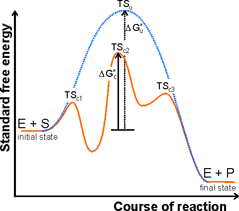

Enzyme Technology
The mechanism of enzyme catalysis
In order for a reaction to occur, reactant
molecules must contain sufficient energy to cross a potential energy barrier,
the activation energy. All molecules possess varying amounts of
energy depending, for example, on their recent collision history but, generally,
only a few have sufficient energy for reaction. The lower the potential energy
barrier to reaction, the more reactants have sufficient energy and, hence, the
faster the reaction will occur. All catalysts, including enzymes, function by
forming a transition state, with the reactants, of lower free energy than would
be found in the uncatalysed reaction (Figure 1.1). Even quite modest reductions
in this potential energy barrier may produce large increases in the rate of
reaction (e.g., the activation energy for the uncatalysed breakdown of hydrogen
peroxide to oxygen and water is 76 kJ M−1 whereas, in the presence of
the enzyme catalase, this is reduced to 30 kJ M−1 and the rate of
reaction is increased by a factor of 108, sufficient to convert a
reaction time measured in years into one measured in seconds).

Figure 1.1. A schematic diagram showing the free
energy profile of the course of an enzyme catalysed reaction involving the
formation of enzyme-substrate (ES) and enzyme-product (EP) complexes, i.e.
The catalysed reaction pathway goes through the transition
states TSc1, TSc2 and TSc3, with standard free
energy of activation DGc*, whereas the uncatalysed
reaction goes through the transition state TSu with standard free
energy of activation DGu*. In this example the rate
limiting step would be the conversion of ES into EP. Reactions involving several
substrates and products, or more intermediates, are even more complicated. The
Michaelis-Menten reaction scheme [1.7] would give a similar profile but
without the EP-complex free energy trough. The schematic profile for the
uncatalysed reaction is shown as the dashed line. It should be noted that the
catalytic effect only concerns the lowering of the standard free energy of
activation from DGu* to
DGc* and has no effect on the overall free energy change (i.e., the difference between
the initial and final states) or the related equilibrium constant.
There are a number of
mechanisms by which this activation energy decrease may be achieved. The most
important of these involves the enzyme initially binding the substrate(s), in
the correct orientation to react, close to the catalytic groups on the active
enzyme complex and any other substrates. In this way the binding energy is used
partially in order to reduce the contribution of the considerable activation
entropy, due to the loss of the reactants' (and catalytic groups') translational
and rotational entropy, towards the total activation energy. Other contributing
factors are the introduction of strain into the reactants (allowing more binding
energy to be available for the transition state), provision of an alternative
reactive pathway and the desolvation of reacting and catalysing ionic groups.
The energies available to enzymes for binding their substrates are determined
primarily by the complementarity of structures (i.e., a good 3-dimensional fit
plus optimal non-covalent ionic and/or hydrogen-bonding forces). The specificity
depends upon minimal steric repulsion, the absence of unsolvated or unpaired
charges, and the presence of sufficient hydrogen bonds. These binding energies
are capable of being quite large. As examples, antibody-antigen dissociation
constants are characteristically near 10−8 M (free energy of binding
is 46 kJ M−1), ATP binds to myosin with a dissociation constant of
10−13 M (free energy of binding is 75 kJ M−1) and biotin
binds to avidin, a protein found in egg white, with a dissociation constant of
10−15 M (free energy of binding is 86 kJ M−1). However,
enzymes do not use this potential binding energy simply in order to bind the
substrate(s) and form stable long-lasting complexes. If this were to be the
case, the formation of the transition state between ES and EP would involve an
extremely large free energy change due to the breaking of these strong binding
forces, and the rate of formation of products would be very slow. They must use
this binding energy for reducing the free energy of the transition state. This
is generally achieved by increasing the binding to the transition state rather
than the reactants and, in the process, introducing an energetic strain into the
system and allowing more favourable interactions between the enzyme's catalytic
groups and the reactants.
Home
| Back | Next
This page was established in 2004 and last updated by Martin
Chaplin
on
6 August, 2014
|